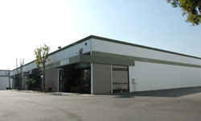

Corporate Profile
Shining is a fast-growing California-based video-computer data conversion and storage technology firm, with patented technology, award-winning branded products, and global distribution supporting its position as a video-disk leader and rapid expansion in video/broadcast/movie data recording, editing, and storage device markets.
Founded in 1992, Shining specializes in the discovery and commercial use of data conversion technology for video and computer equipments to greatly enhance the video/broadcast/movie makers', editors' and users' productivity. In 2002, Shining's research team led by Chris Wang, the CEO, patented an industry-breaking video-computer data conversion technology. Based on this, Shining introduced in 2002 the world's first ultra-portable tapeless video recording disk to be connected to a camera/computer, under Shining’s trademark CitiDISK™. CitiDISK allows ISOC video data captured by a camera to be recorded and converted instantly to computer ASYN video data for playing and editing.
Shining's new product development includes similar data conversion and storage devices for equipments such as analog camera, still camera, MP3, iPod, iPhone, Mobile TV, Internet TV, network personal video recorder, and so on.
Currently, Shining's headquarter at Cypress assembles, markets, and distributes the award-winning CitiDISK HD, HDV and DV models. Compatible with PC/Mac and most cameras (e.g. Canon, JVC, Panasonic and SONY) and editing softwares (e.g. Adobe, Apple, Avid, Canopus and Matrox), CitiDISK has many applications and benefits for:
●Video production (e.g. church, concert, corporate, court, fair, sports, wedding, etc.) & digital signage
●Broadcast electronic news gathering, internet TV, and TV program recording
●Movie and feature film shooting
CitiDISK is a trademark of Shining Technology, Inc. All other companies, product names and technologies are the trademarks, registered trademarks or other property of their respective owners. Product features, descriptions, specifications and other information are subject to change without notice.